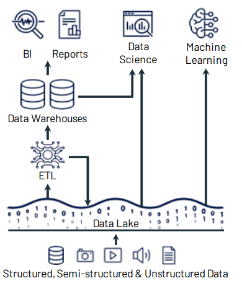

Delta Lake
Created by Bojan Radovic
Table of contents:
Evolution of Data Architectures
Data Warehouse

Data Lake
Data Lakehouse

Delta lake provides the following features:
- Transactional ACID guarantees
- Data versioning
- Audit History
- Indexing, caching and query optimisation
- Unification of batch and streaming into one processing model
- Schema enforcement and evolution
The Medallion Architecture

Column-Oriented Data File Format
Running Delta Lake
Update Delta Table